<title>Crabs! Layer Stack</title>
<meta name="claude:viewport-fit-sides" content="cover">
<style>
  /* Layout: a single reading column with full-width figures; chart-paper neutrals, one sea-blue accent. */
  :root {
    --bg: #f9f9f7; --surface: #fcfcfb; --fg: #0b0b0b; --fg2: #52514e; --muted: #898781;
    --rule: #e1e0d9; --accent: #2a78d6; --accent-soft: #e4eefb; --warn-soft: #fbeee6; --warn: #b4461c;
    --display: "Source Serif 4", Georgia, "Times New Roman", serif;
    --body: "Source Sans 3", system-ui, -apple-system, "Segoe UI", sans-serif;
    --mono: ui-monospace, "SF Mono", Menlo, Consolas, monospace;
  }
  @media (prefers-color-scheme: dark) {
    :root:not([data-theme="light"]) {
      --bg: #0f1113; --surface: #16191c; --fg: #f0efec; --fg2: #c3c2b7; --muted: #898781;
      --rule: #2c2f33; --accent: #5598e7; --accent-soft: #15243a; --warn-soft: #3a2316; --warn: #f0a070;
      color-scheme: dark;
    }
  }
  :root[data-theme="dark"] {
    --bg: #0f1113; --surface: #16191c; --fg: #f0efec; --fg2: #c3c2b7; --muted: #898781;
    --rule: #2c2f33; --accent: #5598e7; --accent-soft: #15243a; --warn-soft: #3a2316; --warn: #f0a070;
    color-scheme: dark;
  }
  body { background: var(--bg); color: var(--fg); font-family: var(--body); font-size: 17px; line-height: 1.55;
         padding-left: max(16px, env(safe-area-inset-left, 0px)); padding-right: max(16px, env(safe-area-inset-right, 0px)); padding-block: 0 64px; }
  main { max-width: 1040px; margin: 0 auto; }
  header { padding-block: 48px 24px; border-bottom: 1px solid var(--rule); margin-bottom: 32px; }
  .eyebrow { font-size: 12px; letter-spacing: 0.12em; text-transform: uppercase; color: var(--muted); margin: 0 0 8px; }
  h1 { font-family: var(--display); font-weight: 600; font-size: clamp(30px, 4vw, 42px); line-height: 1.1; margin: 0 0 12px; text-wrap: balance; }
  .lede { font-size: 19px; color: var(--fg2); max-width: 68ch; margin: 0; }
  h2 { font-family: var(--display); font-weight: 600; font-size: 27px; margin: 48px 0 12px; text-wrap: balance; }
  h3 { font-size: 18px; font-weight: 600; margin: 32px 0 6px; }
  p, li { max-width: 68ch; }
  p { margin: 0 0 14px; }
  ul { padding-left: 1.2em; margin: 0 0 14px; }
  li { margin-bottom: 6px; }
  figure { margin: 18px 0 26px; background: var(--surface); border: 1px solid var(--rule); border-radius: 6px; padding: 10px; }
  figure img { display: block; width: 100%; height: auto; border-radius: 3px; }
  figcaption { font-size: 14px; color: var(--fg2); padding: 10px 4px 2px; max-width: none; }
  .meta { display: flex; flex-wrap: wrap; gap: 8px; margin: 0 0 10px; }
  .tag { font-size: 12.5px; padding: 3px 9px; border-radius: 999px; background: var(--accent-soft); color: var(--fg); border: 1px solid transparent; }
  .tag.real { background: transparent; border-color: var(--rule); color: var(--fg2); }
  .tag.synthetic { background: var(--warn-soft); color: var(--warn); }
  .tablewrap { overflow-x: auto; margin: 16px 0 24px; }
  table { border-collapse: collapse; width: 100%; font-size: 15px; min-width: 640px; }
  th, td { text-align: left; padding: 9px 10px; border-bottom: 1px solid var(--rule); vertical-align: top; }
  th { font-size: 12.5px; letter-spacing: 0.06em; text-transform: uppercase; color: var(--muted); font-weight: 600; }
  td.num { font-variant-numeric: tabular-nums; white-space: nowrap; }
  .callout { background: var(--accent-soft); border-left: 3px solid var(--accent); padding: 12px 16px; border-radius: 0 6px 6px 0; margin: 18px 0 22px; max-width: 72ch; }
  .callout p:last-child { margin-bottom: 0; }
  code { font-family: var(--mono); font-size: 0.88em; background: var(--surface); border: 1px solid var(--rule); padding: 1px 5px; border-radius: 3px; }
  a { color: var(--accent); }
  @media (max-width: 600px) { body { font-size: 16px; } table { min-width: 560px; } }
</style>
<link rel="stylesheet" href="https://fonts.googleapis.com/css2?family=Source+Serif+4:wght@600&family=Source+Sans+3:wght@400;600&display=swap">

<main>
<header>
  <p class="eyebrow">Crabs! &middot; design reference</p>
  <h1>The layer stack over one 5 &times; 5 km of seabed</h1>
  <p class="lede">A worked example of every field the simulation keeps, drawn over a real patch of Bristol Bay, with the resolution and update rate each one deserves. Use it as the shared picture when we talk about the model.</p>
</header>

<h2>Where this square is</h2>
<p>The square sits about 25 km off the Alaska Peninsula, northwest of Port Moller, at 56.30&ndash;56.35&deg; N, 160.52&ndash;160.60&deg; W. It is 22&ndash;45 m deep (12&ndash;25 fathoms). This is the nearshore strip where the autumn fishery concentrates in cold years, and where most of the spring mating aggregation was found in 2023.</p>
<figure>
  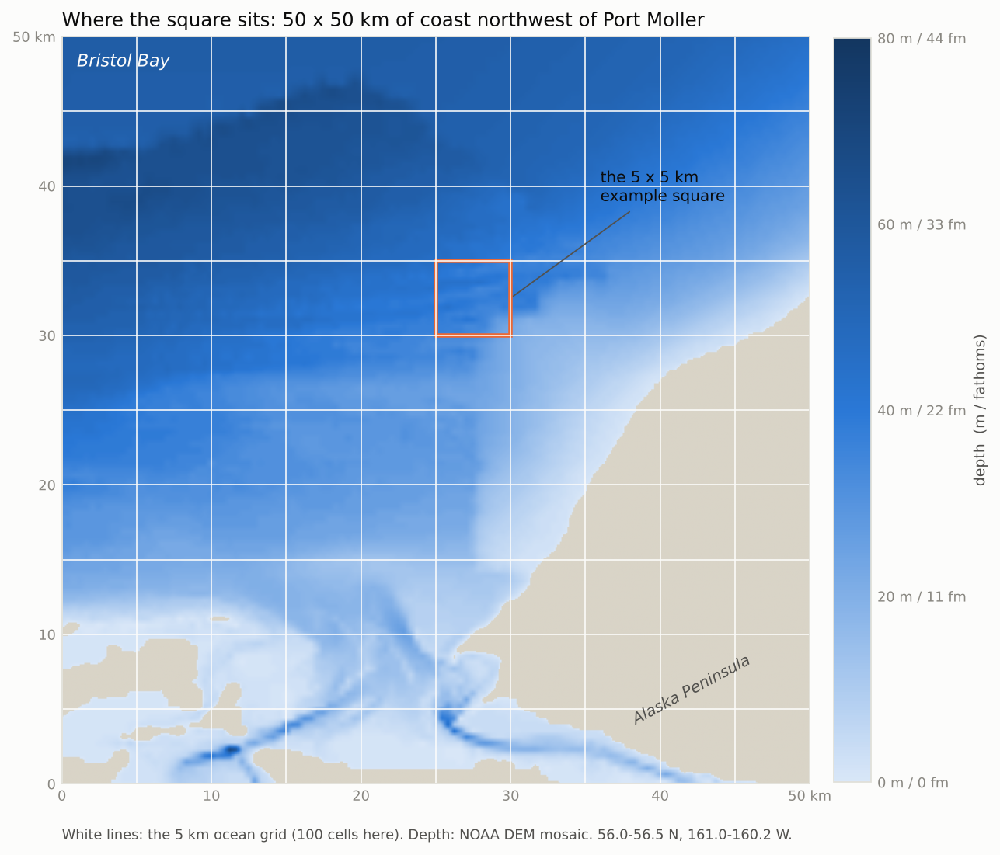
  <figcaption>The 50 &times; 50 km surroundings. White lines are the ocean grid (5 km cells). The orange outline is the example square. Depth is real: NOAA's DEM mosaic.</figcaption>
</figure>

<h2>Two grids, and only the live cells</h2>
<p>Crabbers set pots as close as a tenth of a mile apart, so around gear the sim needs 100 m cells. But Bristol Bay at 100 m is 16 million cells, far too many to update each tick. The design uses two grids and skips dead cells on both.</p>
<ul>
  <li><strong>Ocean grid, 5 km cells.</strong> Runs everywhere. Migration, mortality, growth and recruitment live here. One 5 km cell is one square in the figure above.</li>
  <li><strong>Fine patches, 100 m cells.</strong> Created around pots and sensors; one ocean cell becomes 2,500 fine cells. Folded back into the ocean cell when the last pot leaves.</li>
  <li><strong>Live cells only.</strong> Before updating, each grid masks out land, water outside the crab's depth range, and cells whose habitat score falls below a floor. The sim moves crab only through live cells.</li>
</ul>
<figure>
  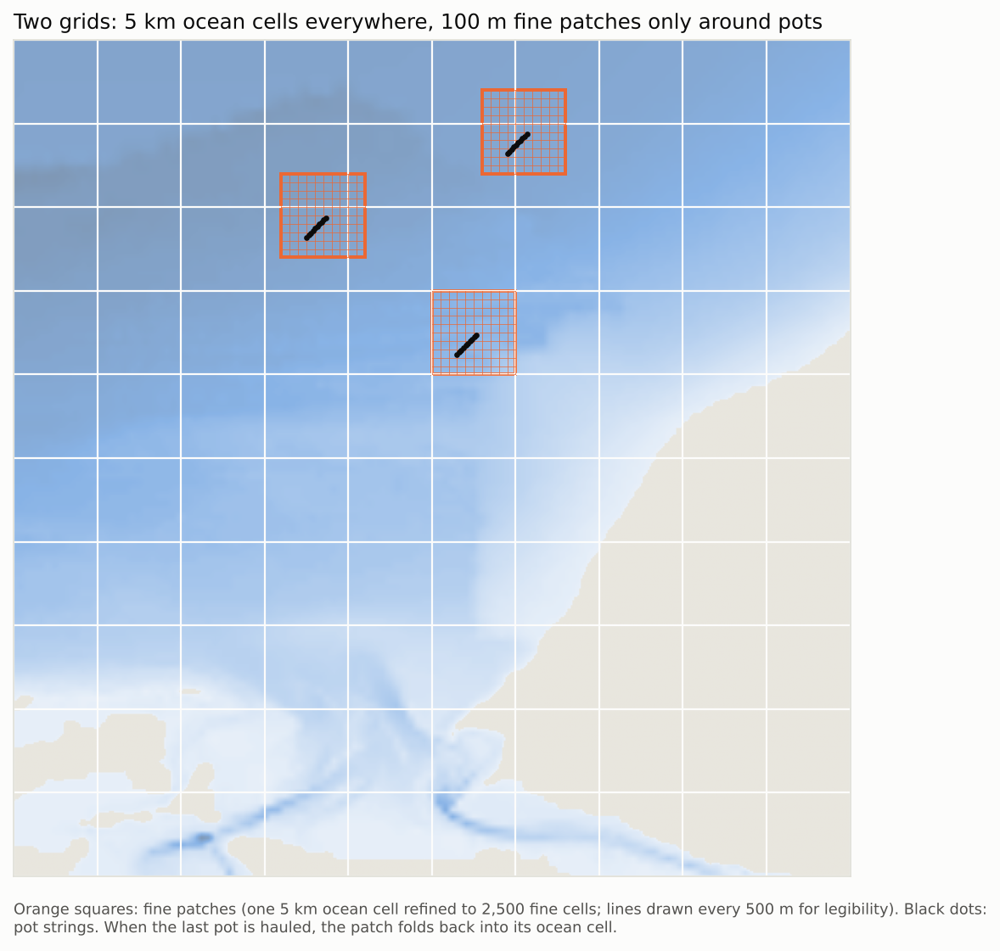
  <figcaption>Ocean grid everywhere; fine patches (orange) only where pot strings (black dots) are set.</figcaption>
</figure>
<figure>
  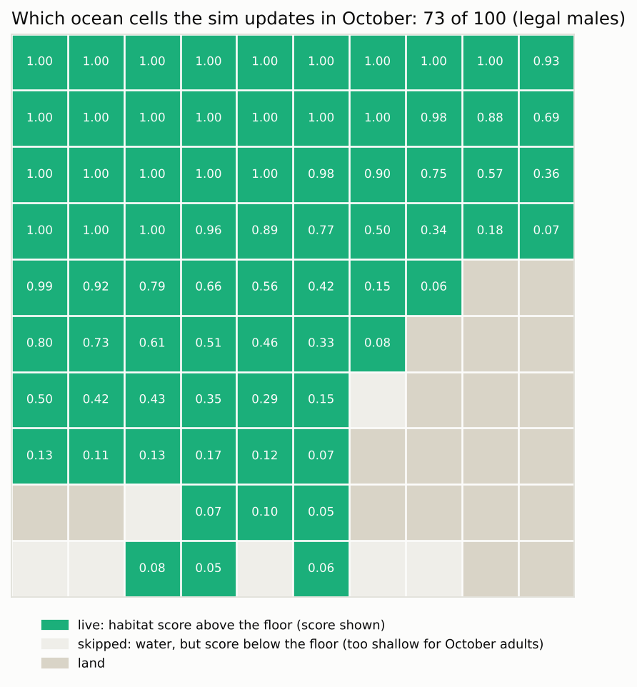
  <figcaption>The live-cell mask for legal males in October over the same 50 km. The floor (score &gt; 0.05) drops the shallow cells by the coast as well as the land, so the sim updates 73 cells instead of 100. In spring, when adults move inshore, the same cells flip to live.</figcaption>
</figure>

<h2>The layers, bottom to top</h2>
<p>Each layer is a grid of numbers over the same square. The layers are ordered by what depends on what: terrain at the bottom, water on top of it, then crab, then gear. The tags say whether the picture comes from real data or is a stand-in, and how often the sim recomputes it.</p>
<div class="callout">
  <p><strong>A layer's clock is the fastest clock among its inputs.</strong> Depth never changes, so slope never changes. Temperature changes daily, so the habitat score that uses it changes daily. The tidal current changes hourly, so the bait plume it points changes hourly. Crab density takes inputs from both the slow side (habitat score, daily) and the fast side (bait plume and current, hourly), and inside a fine patch it moves on the hourly clock because crab walking toward bait cover 100 m in about an hour. Away from any pot there is no fast input, so density on the ocean grid only moves daily.</p>
</div>

<h3>Layer 1. Depth</h3>
<div class="meta"><span class="tag real">real shape, interpolated detail</span><span class="tag">100 m</span><span class="tag">static</span></div>
<p>The one layer that comes from data. The shape is NOAA's DEM mosaic, but the surveys behind it in this spot are 500&ndash;700 m apart, so the 100 m detail is interpolation. The AFSC 100 m smooth-sheet grids would replace it in the beauty pass. Depth is the strongest driver of where adult crab go (rule 1), and it never changes, so it loads once.</p>
<figure>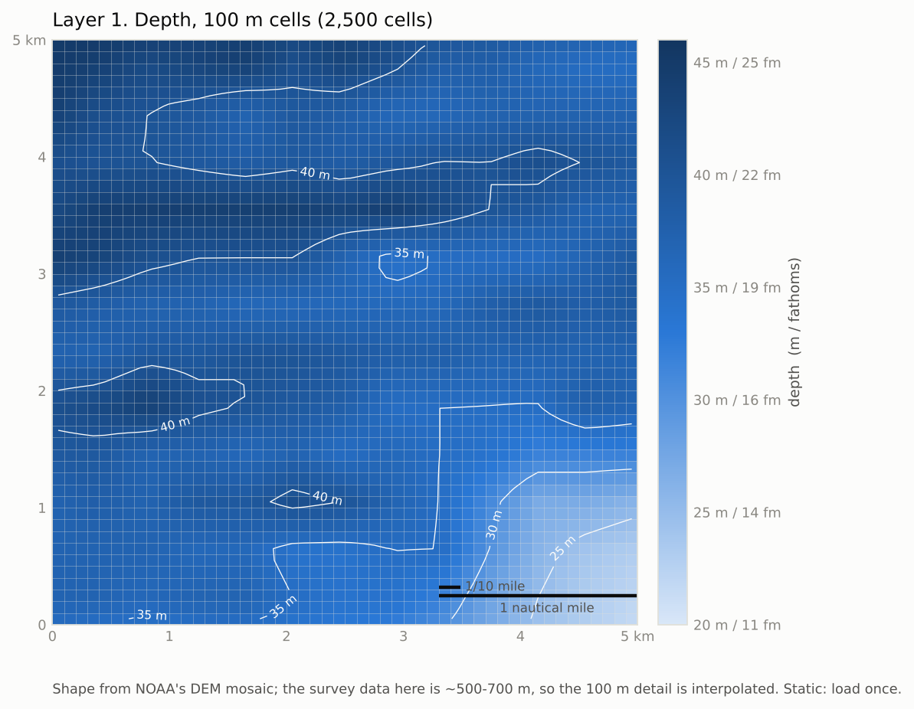<figcaption>Contours every 5 m. The scale bar shows how a 1/10-mile pot spacing compares with the cells.</figcaption></figure>

<h3>Layers 2 and 3. Slope and substrate</h3>
<div class="meta"><span class="tag real">slope: derived from depth</span><span class="tag synthetic">substrate: synthetic</span><span class="tag">100 m</span><span class="tag">static</span></div>
<p>Slope is metres of rise per km, computed from depth. Crab favour edges and ledges over flat bottom, and juveniles need structure (cobble, shell hash) to survive. There is no public sediment map at this scale, so substrate here is generated from depth and slope plus seeded noise: finer sediment where it's deeper and flatter. It stays a tunable guess until we find a source.</p>
<figure>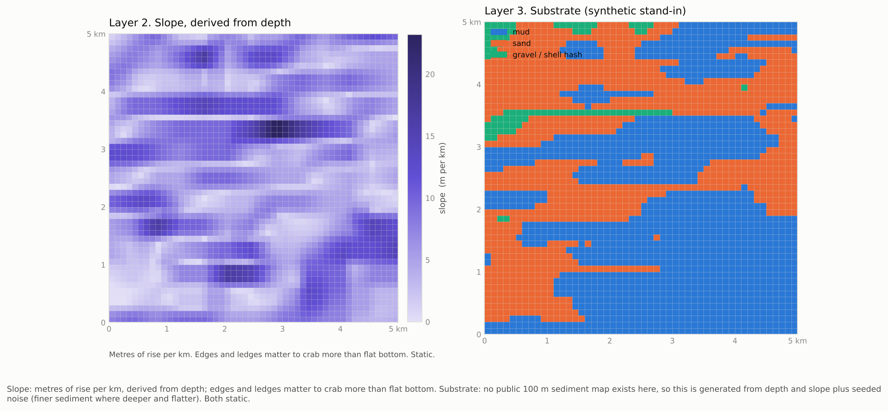<figcaption>Left: slope. Right: substrate classes.</figcaption></figure>

<h3>Layer 4. Bottom temperature</h3>
<div class="meta"><span class="tag synthetic">synthetic</span><span class="tag">5&ndash;10 km is enough</span><span class="tag">daily</span></div>
<p>Temperature decides which half of the bay the autumn crab use (rule 3 and 4), but it barely varies within 5 km: across this whole square it changes by about 0.1 &deg;C. So the sim keeps one temperature per ocean cell and never refines it. In the real bay the value comes from a seasonal cycle plus a cold-pool blob; here it's October water near 3 &deg;C.</p>
<figure>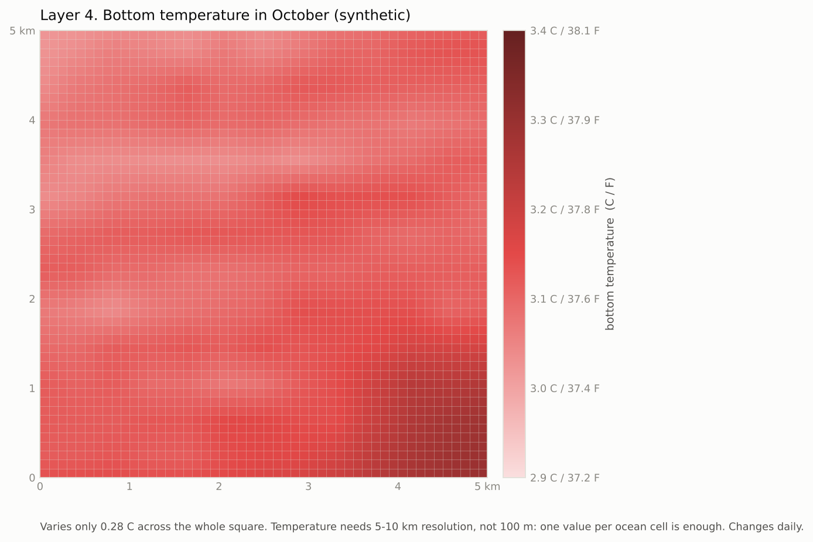<figcaption>Flat on purpose. The colour range is stretched to show any structure at all.</figcaption></figure>

<h3>Layer 5. Tidal current</h3>
<div class="meta"><span class="tag synthetic">synthetic</span><span class="tag">1&ndash;5 km</span><span class="tag">hourly</span></div>
<p>Bristol Bay has strong tides. The current here runs along the shore and reverses every six hours or so, around 0.3 m/s (0.6 knots) at peak. The sim doesn't need it finer than a few km, but it does need it hourly, because it sets which way the bait scent drifts (layer 9), and moon phase sets its strength (spring versus neap tides).</p>
<figure>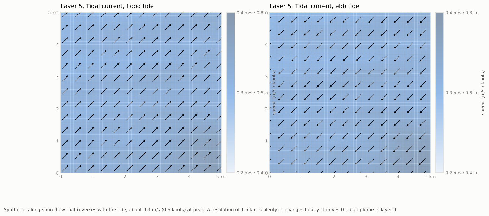<figcaption>Flood and ebb. Arrows are direction; the shade behind them is speed.</figcaption></figure>

<h3>Layer 6. Habitat score</h3>
<div class="meta"><span class="tag">computed from layers 1&ndash;4</span><span class="tag">100 m in patches, 5 km elsewhere</span><span class="tag">daily</span></div>
<p>This is the "desirability" layer: for each crab class, how much it wants to be in each cell today. It multiplies a depth preference (which shifts with the month), a temperature preference, and a substrate bonus, all from the rules doc. In October adults want 50&ndash;100 m, and this square is 22&ndash;45 m, so scores are modest and improve toward the deeper edge. In May the same square would score near 1.</p>
<figure>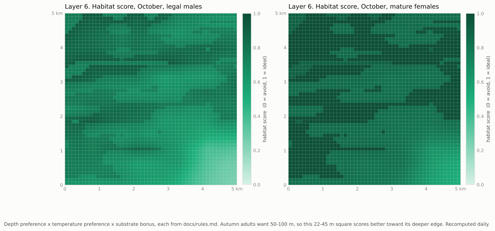<figcaption>Legal males (left) and mature females (right) score the same square differently, because females tolerate shallower water and are more sensitive to cold.</figcaption></figure>

<h3>Layer 7. Where crab are possible</h3>
<div class="meta"><span class="tag">computed from layer 6</span><span class="tag">100 m</span><span class="tag">daily</span></div>
<p>The live-cell mask at fine scale: water, 5&ndash;120 m deep, and habitat score above the floor. In this square every cell is live, so the mask does nothing here; it earns its keep at the coast and in the deep middle of the bay, where it drops most cells from the update.</p>
<figure>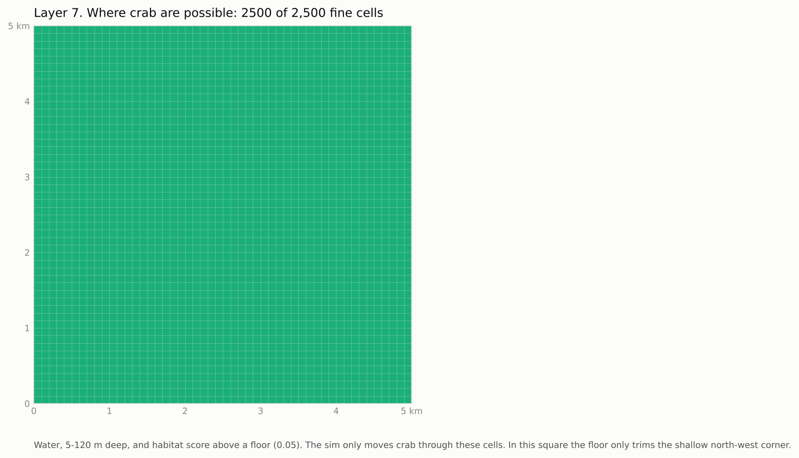<figcaption>All 2,500 cells live. Compare with the 50 km mask above, where the floor removes a quarter of the cells.</figcaption></figure>

<h3>Layer 8. Crab density</h3>
<div class="meta"><span class="tag">computed</span><span class="tag">100 m in patches, 5 km elsewhere</span><span class="tag">hourly in patches, daily elsewhere</span></div>
<p>The number of crab per cell. The ocean grid holds a total for the 5 km cell (here 4,000 legal males and 9,000 mature females, a plausible autumn count). When a patch is refined, that total is spread over the fine cells by habitat score, then roughened by seeded patchiness that stands in for podding. The fine cells always sum back to the ocean cell's count. Two things move density: the slow drift along the habitat-score gradient (daily, from layer 6), and the fast pull toward bait (hourly, from layer 9). Inside a patch both run; on the ocean grid only the slow one does.</p>
<figure>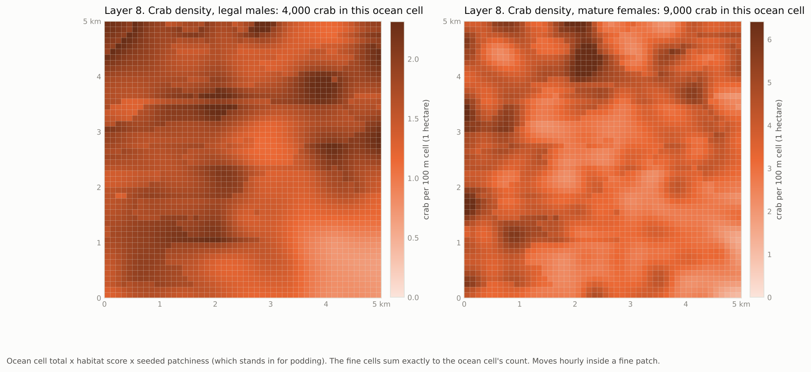<figcaption>Crab per 100 m cell (one hectare). Females are more clumped: a different seed and stronger patchiness.</figcaption></figure>

<h3>Layer 9. Pots and bait plumes</h3>
<div class="meta"><span class="tag real">size from a snow crab analog</span><span class="tag">100 m</span><span class="tag">hourly</span></div>
<p>A string of ten pots a tenth of a nautical mile (185 m) apart, laid along the depth contour. Each pot's bait scent drifts downstream with the current, so its footprint is an oval that swings around with every tide. The size comes from the best field measurement we have, a snow crab tag-and-recapture study: crab notice a pot from about 100&ndash;140 m away, and the area where they're likely to be caught within a day reaches about 60 m. No one has measured this for king crab, but lab video shows king crab approach from downstream and lock onto the plume the same way. At 185 m spacing neighbouring plumes just touch, which is why spacing is a real decision. The catch formula samples the crab density under the plume.</p>
<figure>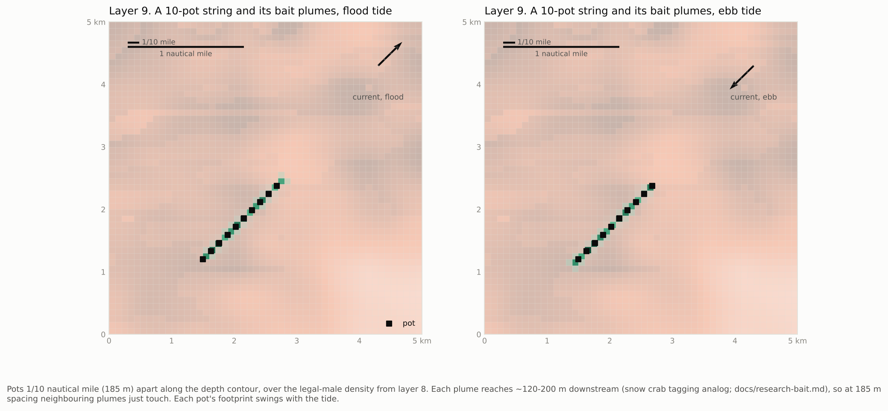<figcaption>Flood tide (left) and ebb (right): the same pots, the plume flipped. Plumes here are 150 m long at 0.3 m/s, capped at 200 m.</figcaption></figure>

<h2>Stacked</h2>
<figure>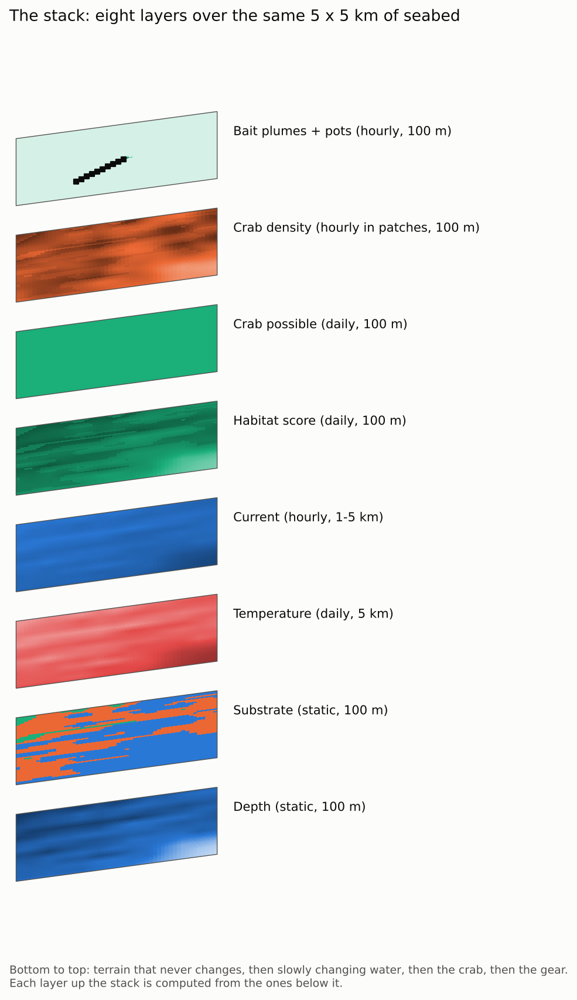<figcaption>Every layer over the same square, ordered by dependency: terrain at the bottom, then water, then crab, then gear. Each sheet is computed from the ones below it, and each ticks as fast as its fastest input. Current (hourly) sits below habitat score (daily) because score doesn't use it; density above both uses both.</figcaption></figure>

<h2>What resolution each variable deserves</h2>
<p>The point of the stack is that different variables need different resolutions and different clocks. Paying 100 m and hourly for everything would waste nearly all the work on fields that are flat at that scale.</p>
<div class="tablewrap">
<table>
  <thead><tr><th>Variable</th><th>Space</th><th>Time</th><th>Why</th><th>Source</th></tr></thead>
  <tbody>
    <tr><td>Depth</td><td class="num">100 m</td><td>never</td><td>Strongest movement driver; sets the pot's spot on a contour</td><td>GEBCO now, AFSC 100 m later</td></tr>
    <tr><td>Slope, substrate</td><td class="num">100 m</td><td>never</td><td>Edges and structure; juvenile nurseries</td><td>Derived / synthetic</td></tr>
    <tr><td>Bottom temperature</td><td class="num">5&ndash;10 km</td><td>daily</td><td>Decides warm-year vs cold-year grounds; flat within 5 km</td><td>Seasonal model, cold pool</td></tr>
    <tr><td>Tidal current</td><td class="num">1&ndash;5 km</td><td>hourly</td><td>Points the bait plume; strength follows the moon</td><td>Synthetic tide model</td></tr>
    <tr><td>Moon, tide phase, time of day</td><td>whole map</td><td>hourly</td><td>Single numbers, not maps</td><td>Calendar</td></tr>
    <tr><td>Habitat score</td><td class="num">5 km / 100 m in patches</td><td>daily</td><td>Changes with the month's depth preference</td><td>Rules 1, 3, 5</td></tr>
    <tr><td>Crab density</td><td class="num">5 km / 100 m in patches</td><td>daily / hourly in patches</td><td>Slow input: habitat score (daily). Fast input: bait plume (hourly), present only in patches</td><td>Rules 2, 6, 9&ndash;12</td></tr>
    <tr><td>Bait plume</td><td class="num">100 m or finer</td><td>hourly</td><td>120&ndash;200 m long; swings with every tide; decays as bait is eaten</td><td>Rules 14, 15; research-bait.md</td></tr>
    <tr><td>Pots, sensors</td><td>points</td><td>on placement and haul</td><td>Gear positions, soak clocks</td><td>Player</td></tr>
  </tbody>
</table>
</div>

<div class="callout">
  <p><strong>Rough cost.</strong> Ocean grid: Bristol Bay is about 6,400 cells at 5 km, of which maybe 2,000&ndash;4,000 are live in a given month. Fine patches: 2,500 cells each, hourly. Two hundred pots in forty patches is 100,000 fine cells, about the same work as the whole ocean grid. Both fit comfortably in numpy.</p>
</div>

<h2>What's real and what isn't</h2>
<ul>
  <li><strong>Real:</strong> the coastline and depth shape (NOAA DEM mosaic), the square's location, the depth and temperature preferences, the 1/10-mile pot spacing, the 0.8 km/day walking speed, the population counts behind the density totals.</li>
  <li><strong>Stand-ins:</strong> the fine texture in depth (interpolated), substrate, the exact temperature field, the current field, and the patchiness of crab. The plume size is borrowed from snow crab. Each is labelled on its figure and is a named parameter in the sim.</li>
</ul>
<p>Everything on this page is generated by <code>crabs/docs/layers/make_layers.py</code> from <code>crabs/data/port_moller_nw_elev_100m.npy</code>, so when a stand-in gets replaced by data, the page regenerates.</p>

<h2>Open questions this raises</h2>
<ul>
  <li>Bait pulls crab from about 120 m (up to 200 m in strong current), and a crab walks that in 1&ndash;2 hours. So a fine patch only needs to reach a few hundred metres past the outermost pot, not 5 km. Patches could be much smaller than one ocean cell.</li>
  <li>Bristol Bay field data show legal-male catch still doubling between 24 and 72 hours of soak, so rule 13's "levels off by 48 h" needs revising.</li>
  <li>Fine patches should hug pot strings (a few hundred metres past the outermost pot) rather than fill a 5 km cell. Decided in the plan; the figures above still show 5 km patches and will be redrawn when the sim exists.</li>
  <li>Do we want a middle grid (say 1 km) around the boat for things like sensors and sonar, or is two levels enough?</li>
  <li>Juvenile nurseries sit at the coast, exactly where the live-cell floor for adults removes cells. Each class needs its own mask.</li>
</ul>
</main>
